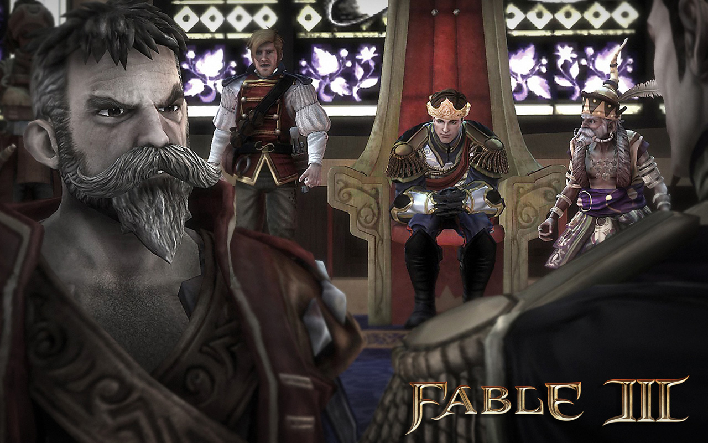
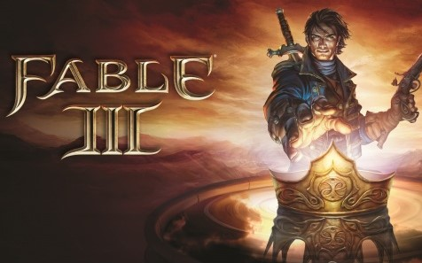
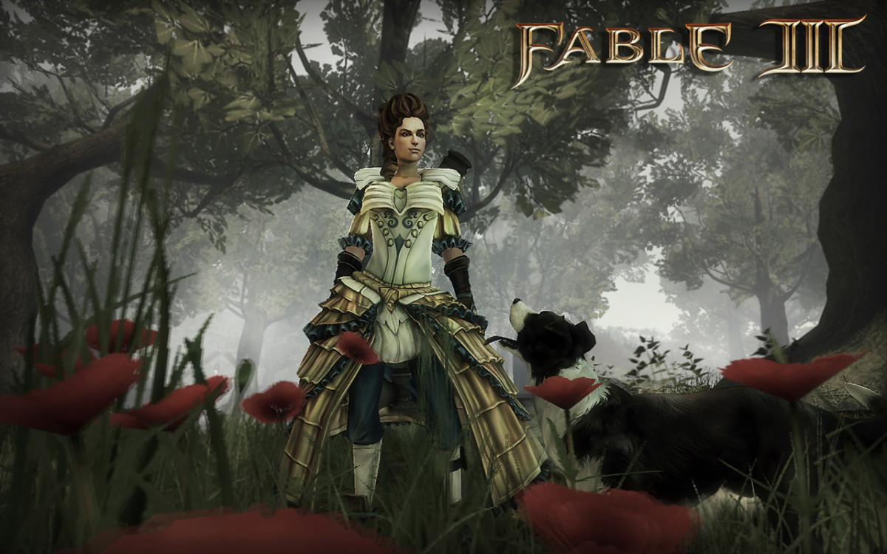
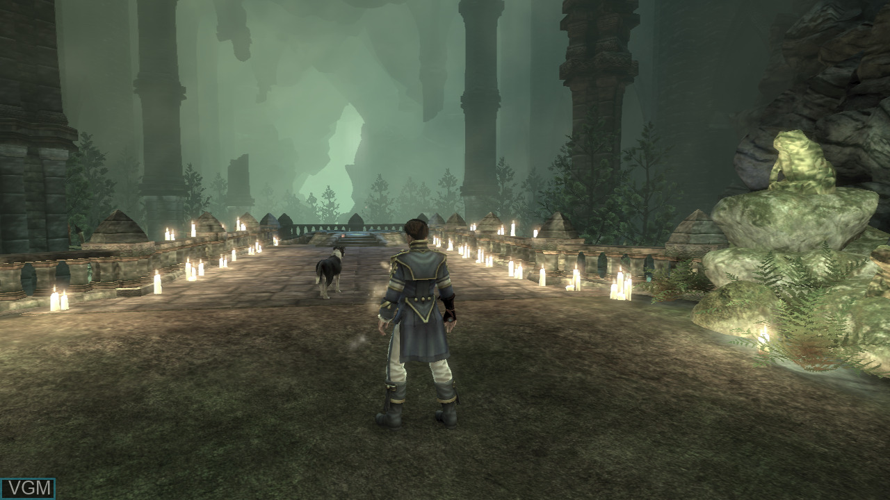
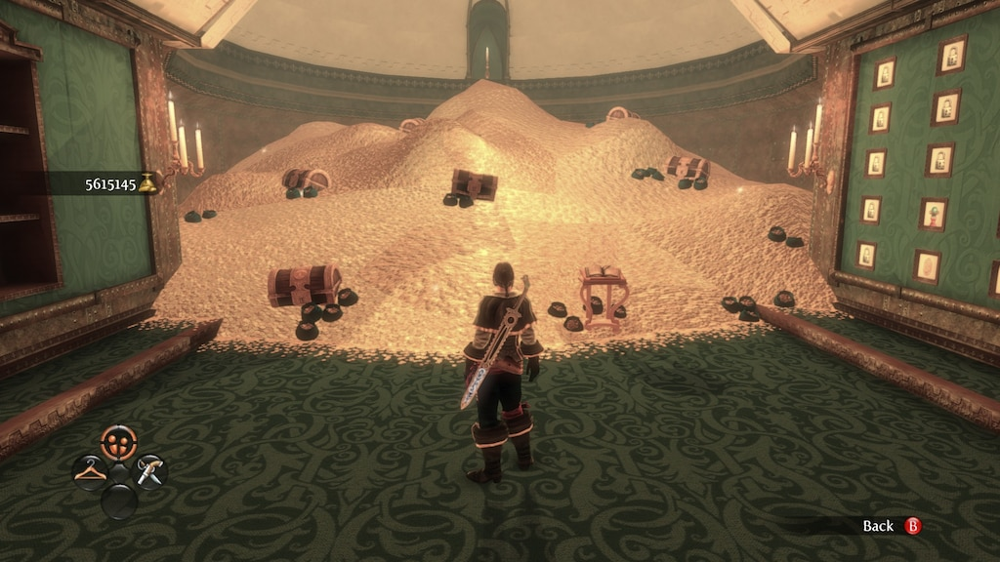
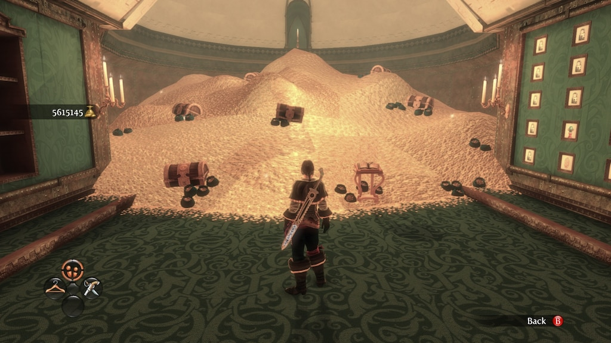
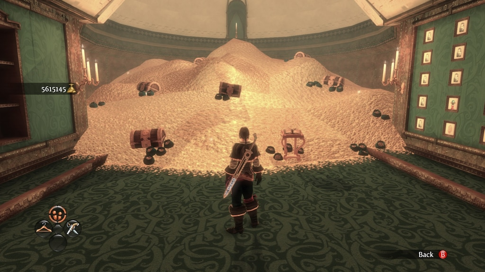

Fable 3 (2010) Review: A Tale of Pros and Cons
Released in 2010, Fable 3, developed by Lionhead Studios, offers players a whimsical journey through the vibrant land of Albion...
Pros:
- Engaging Moral Choices: Fable 3 shines in its moral decision-making system...
- Charming British Humor: The game's witty and often humorous dialogue...
- Immersive World Design: Albion is a visually stunning world...
- Captivating Storyline: Fable 3 presents a compelling narrative...
Cons:
- Simplistic Combat Mechanics: While the combat in Fable 3 is accessible and enjoyable...
- Technical Limitations: Graphically, Fable 3 may not meet the standards of modern releases...
- Lack of Exploration Incentives: Despite the immersive world design...
In conclusion, Fable 3 delivers an enchanting and immersive experience with its engaging moral choices...
Screenshots from the Game




 

